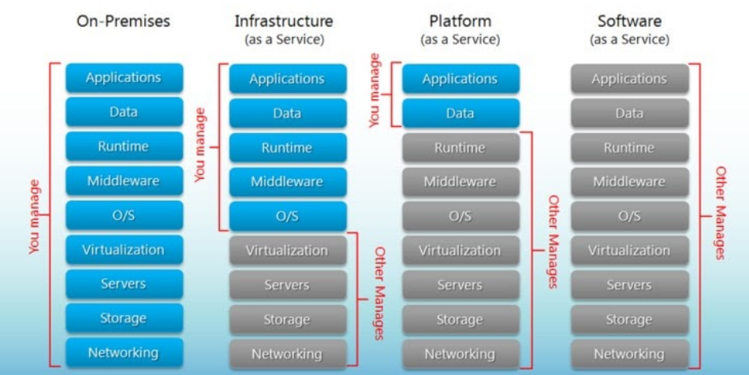
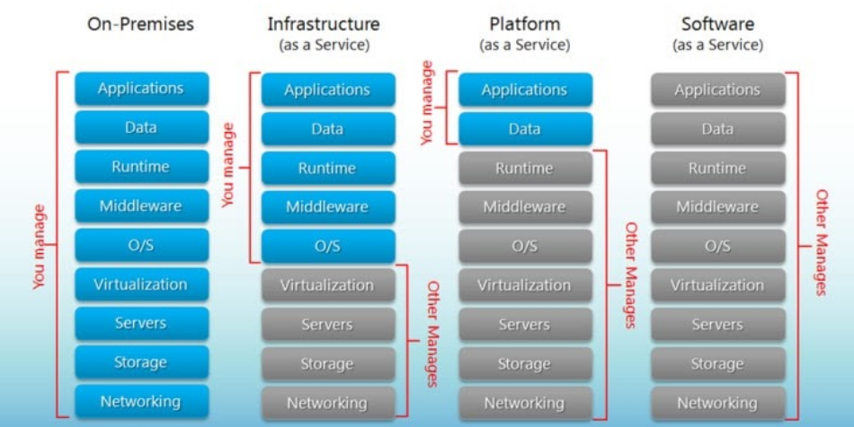

12. Backend APIs
Introduction to Cloud Services
What is “Public Cloud”
It’s globally distributed compute connected via networks.

Managed Services
Services are available on demand using APIs
It’s globally distributed compute connected via networks.
Services are available on demand using APIs
